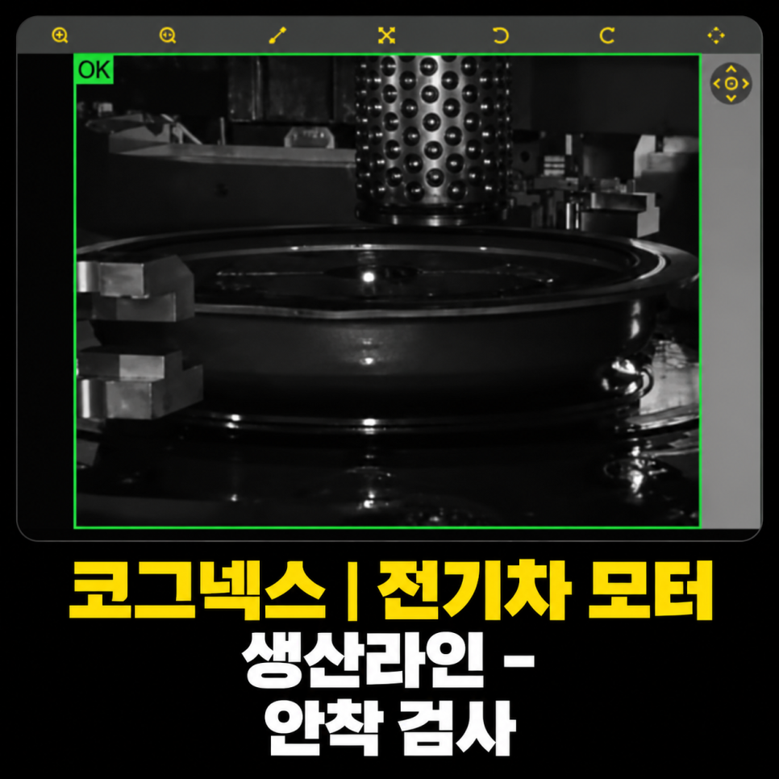

자동차 · 전기차 모터 코어 · AI 비전검사
전기차 모터 프레스 안착 AI 검사 시스템 사례
Cognex HDR · AI Classification
외부 조명 설치가 어려운 프레스 설비에서 Cognex HDR로 밝기 변화에 대응하고, AI Classification으로 프레스 동작 전 제품의 안착 상태를 판정한 사례입니다.

Project Summary
프로젝트 핵심 구성
- 산업
- 자동차 · 전기차 모터 코어
- 검사·자동화 대상
- 전기차 모터 프레스 안착 AI 검사
- 주요 기술
- Cognex HDR · AI Classification
- 적용 구분
- 프로젝트 사례
Project Photos
실제 구축 현장 및 검사 화면
01 · Overview
프로젝트 개요
외부 조명 설치가 어려운 프레스 설비에서 Cognex HDR로 밝기 변화에 대응하고, AI Classification으로 프레스 동작 전 제품의 안착 상태를 판정한 사례입니다.
02 · Problem
프로젝트에서 해결해야 했던 문제
고객사는 전기차 모터에 사용되는 원형 코어를 프레스 공정에서 가공하고 있었습니다.
금속 판재를 원형으로 성형한 후 프레스가 반복적으로 제품을 타발하여 최종 형상을 만드는 공정이었습니다.
하지만 가끔 제품이 금형에 정확하게 안착되지 않은 상태에서 프레스가 동작하는 문제가 발생했습니다.
이 경우
제품 변형
금형 손상 가능성
불량 발생
재작업 증가
등의 문제가 발생할 수 있어 프레스가 동작하기 전에 안착 상태를 자동으로 검사해야 하는 상황이었습니다.
- 외부 조명 설치 공간 부족
- 문 개폐·주야간 조도 변화
- 프레스 전 안착 확인
03 · System
검사·자동화 시스템 구성
외부 조명 설치가 어려운 프레스 설비에서 Cognex HDR로 밝기 변화에 대응하고, AI Classification으로 프레스 동작 전 제품의 안착 상태를 판정한 사례입니다.
정상·안착 불량 학습
프레스 동작 전 AI 판정
04 · Inspection
프로젝트 배경
프레스 공정은 머신비전을 적용하기 가장 어려운 환경 중 하나입니다.
강한 진동, 협소한 설치 공간, 지속적으로 변하는 외부 조명 환경 등 다양한 변수 때문에 일반적인 비전검사 방식으로는 안정적인 검사가 어려운 경우가 많습니다.
이번 프로젝트는 전기차 모터 코어 생산라인에서 프레스 작업 전 안착(Seating) 상태를 AI 비전검사로 자동 검사한 사례입니다.
외부 조명을 설치할 수 없는 환경에서도 Cognex 스마트카메라의 HDR 기능과 AI Classification을 활용하여 안정적인 자동 검사 시스템을 구축하였습니다.
05 · Inspection
고객의 고민
고객사는 전기차 모터에 사용되는 원형 코어를 프레스 공정에서 가공하고 있었습니다.
금속 판재를 원형으로 성형한 후 프레스가 반복적으로 제품을 타발하여 최종 형상을 만드는 공정이었습니다.
하지만 가끔 제품이 금형에 정확하게 안착되지 않은 상태에서 프레스가 동작하는 문제가 발생했습니다.
이 경우
제품 변형
금형 손상 가능성
불량 발생
재작업 증가
등의 문제가 발생할 수 있어 프레스가 동작하기 전에 안착 상태를 자동으로 검사해야 하는 상황이었습니다.
06 · Inspection
가장 큰 문제는 조명을 설치할 수 없었습니다
머신비전 프로젝트에서는 일반적으로 조명을 설치하여 일정한 촬영 환경을 만드는 것이 가장 중요합니다.
하지만 이번 프로젝트는 프레스 설비 구조상
조명을 설치할 공간이 거의 없었고
카메라 설치 위치도 매우 제한적이었습니다.
여기에 또 다른 문제가 있었습니다.
프레스 설비 옆에는 외부 출입문이 있었기 때문에
문이 열리면 강한 자연광이 들어오고
문이 닫히면 조도가 급격히 낮아지며
낮과 밤의 밝기 차이도 매우 컸습니다.
즉, 같은 제품이라도 촬영되는 밝기가 계속 변하는 매우 까다로운 환경이었습니다.
07 · Inspection
룰베이스보다 AI가 적합하다고 판단했습니다
현장을 확인한 순간 가장 먼저 든 생각은
"이 프로젝트는 룰베이스보다 AI가 훨씬 유리하겠다."
였습니다.
조명 환경이 계속 변하고 제품 밝기도 일정하지 않은 상황에서는 기존 룰베이스 방식으로 검사 조건을 맞추는 것이 매우 어려웠습니다.
따라서 복잡한 검사 조건을 계속 수정하는 것보다 AI Classification을 활용하여 정상과 불량을 학습시키는 방식이 훨씬 안정적이라고 판단하였습니다.
08 · Inspection
Cognex HDR 기능으로 밝기 변화를 극복
이번 프로젝트에서는 Cognex 스마트카메라를 사용하였습니다.
Cognex 스마트카메라에는 HDR(High Dynamic Range) 기능이 탑재되어 있어 밝기 차이가 큰 환경에서도 영상을 보다 일정하게 표현할 수 있습니다.
HDR 기능을 적용한 결과
외부 문이 열려도
문이 닫혀도
낮과 밤이 바뀌어도
영상 밝기를 일정한 수준으로 유지할 수 있었습니다.
덕분에 별도의 외부 조명을 설치하지 않고도 안정적인 검사 영상을 확보할 수 있었습니다.
09 · Inspection
AI Classification으로 안착 상태 자동 검사
광학 조건을 확보한 후에는 Cognex AI Classification을 적용하였습니다.
정상적으로 안착된 제품과
안착이 불량한 제품을 각각 학습시켜
프레스가 동작하기 전에 자동으로 안착 상태를 판정하도록 시스템을 구축하였습니다.
복잡한 검사 알고리즘을 작성하지 않고도 AI가 안정적으로 정상과 불량을 구분할 수 있었습니다.
10 · Inspection
이번 프로젝트를 통해 고객이 얻은 효과
이번 시스템 구축으로 고객사는 다음과 같은 효과를 얻을 수 있었습니다.
✔ 프레스 공정 전 안착 상태 자동 검사
✔ 작업자의 육안 검사 최소화
✔ 안착 불량으로 인한 제품 불량 예방
✔ 금형 보호
✔ Cognex HDR을 활용한 밝기 변화 대응
✔ 외부 조명 없이 안정적인 검사
✔ AI Classification 적용
✔ 휴먼에러 감소
✔ 검사 기준 표준화
✔ 생산성 및 품질 향상
11 · Inspection
ASPEC의 생각
이번 프로젝트는 AI만 적용해서 해결된 사례가 아닙니다.
프레스 설비의 구조, 설치 공간, 외부광 변화 등 현장의 제약 조건을 충분히 분석한 후
Cognex HDR 기능과 AI Classification을 적절히 조합하여 해결한 프로젝트였습니다.
머신비전은 항상 좋은 조명을 설치할 수 있는 환경만 있는 것이 아닙니다.
때로는 설치 공간과 생산 설비의 특성을 고려하여 가장 현실적인 방법으로 문제를 해결하는 것이 더 중요합니다.
ASPEC은 자동차, 전기차 배터리, 모터, 프레스, 제약·바이오, 식품, 전자부품 등 다양한 산업 분야에서 머신비전 시스템을 구축하며 축적한 경험을 바탕으로 고객의 생산 환경에 가장 적합한 솔루션을 제안하고 있습니다.
Project Videos
실제 검사·자동화 영상
Operation
현장 적용과 운영 조건
외부 조명 설치가 어려운 프레스 설비에서 Cognex HDR로 밝기 변화에 대응하고, AI Classification으로 프레스 동작 전 제품의 안착 상태를 판정한 사례입니다.
- 외부 조명 설치 공간 부족
- 문 개폐·주야간 조도 변화
- 프레스 전 안착 확인
Result
적용 효과
- 프레스 공정 전 안착 상태 자동 검사
- 작업자의 육안 검사 최소화
- 안착 불량으로 인한 제품 불량 예방
- 금형 보호
- Cognex HDR을 활용한 밝기 변화 대응
- 외부 조명 없이 안정적인 검사
- AI Classification 적용
- 휴먼에러 감소
- 검사 기준 표준화
- 생산성 및 품질 향상
Engineering
ASPEC의 머신비전 시스템 설계 방식
검사 대상의 재질과 형상, 설치 공간과 생산 조건에 맞춰 장비·광학·소프트웨어와 설비 연동을 함께 검토합니다.
- 외부 조명 설치 공간 부족
- 문 개폐·주야간 조도 변화
- 프레스 전 안착 확인
08 · Related Cases
관련 구축사례
비슷한 공정의 자동화를 검토하고 계신가요?
검사 대상과 불량 샘플, 설치 공간, 택타임을 알려주시면 적용 구성을 검토해 드립니다.